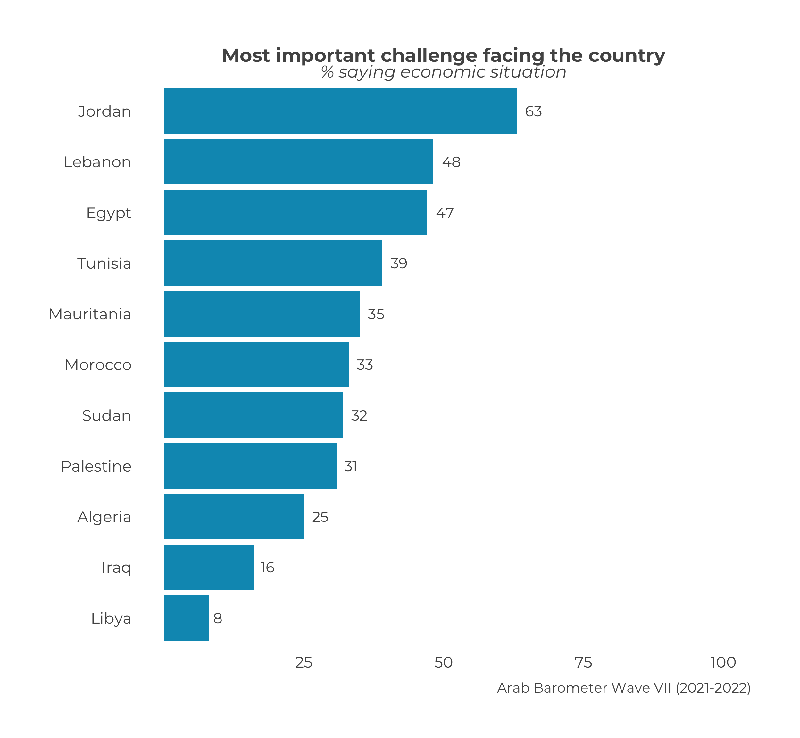
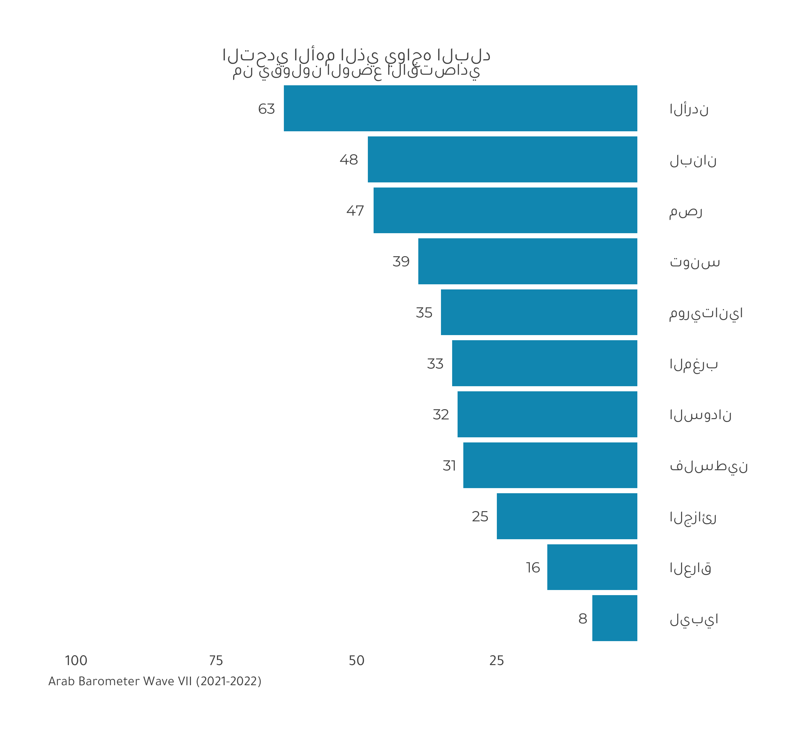
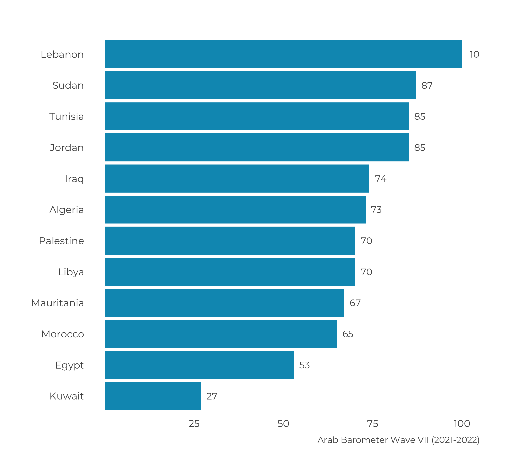
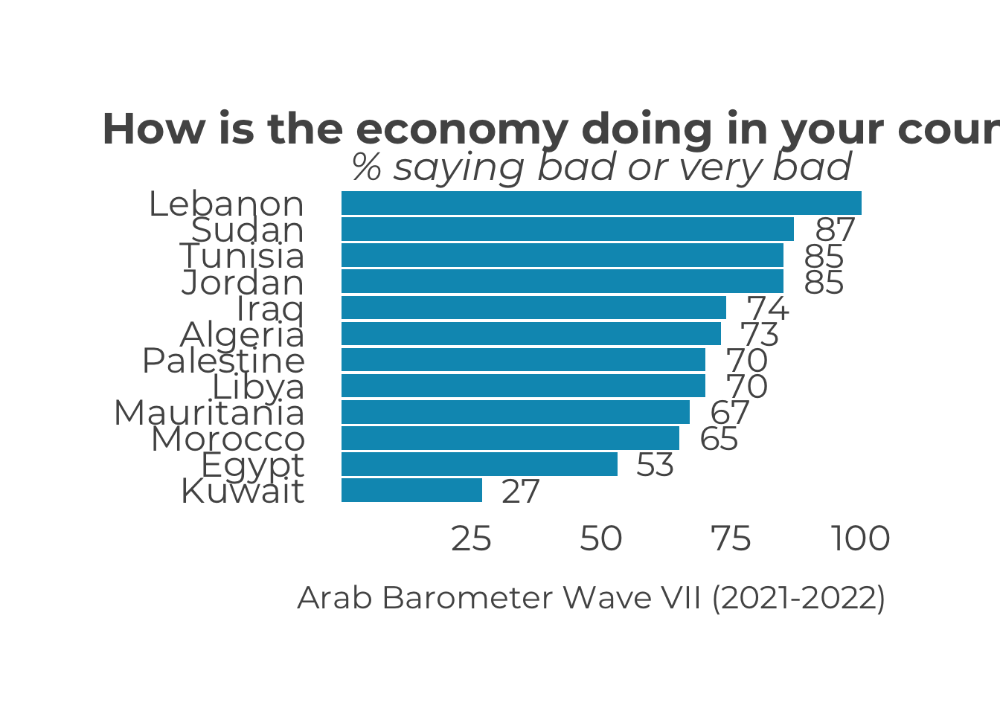
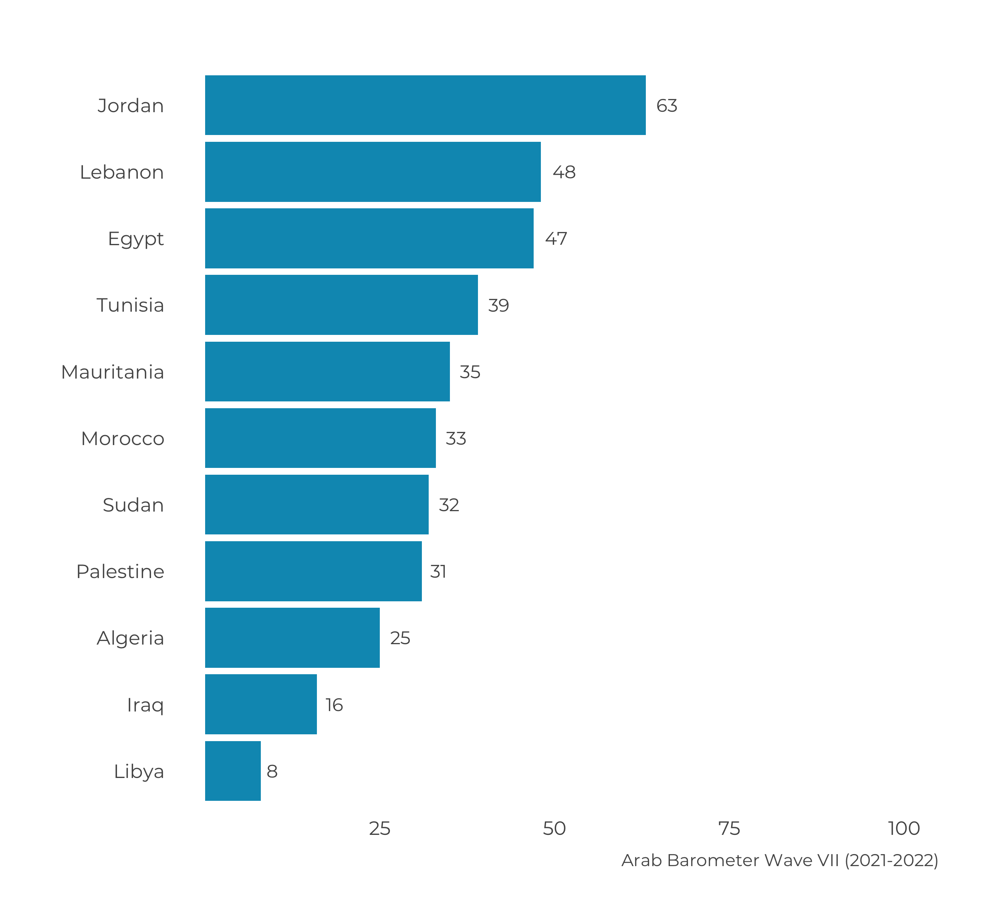
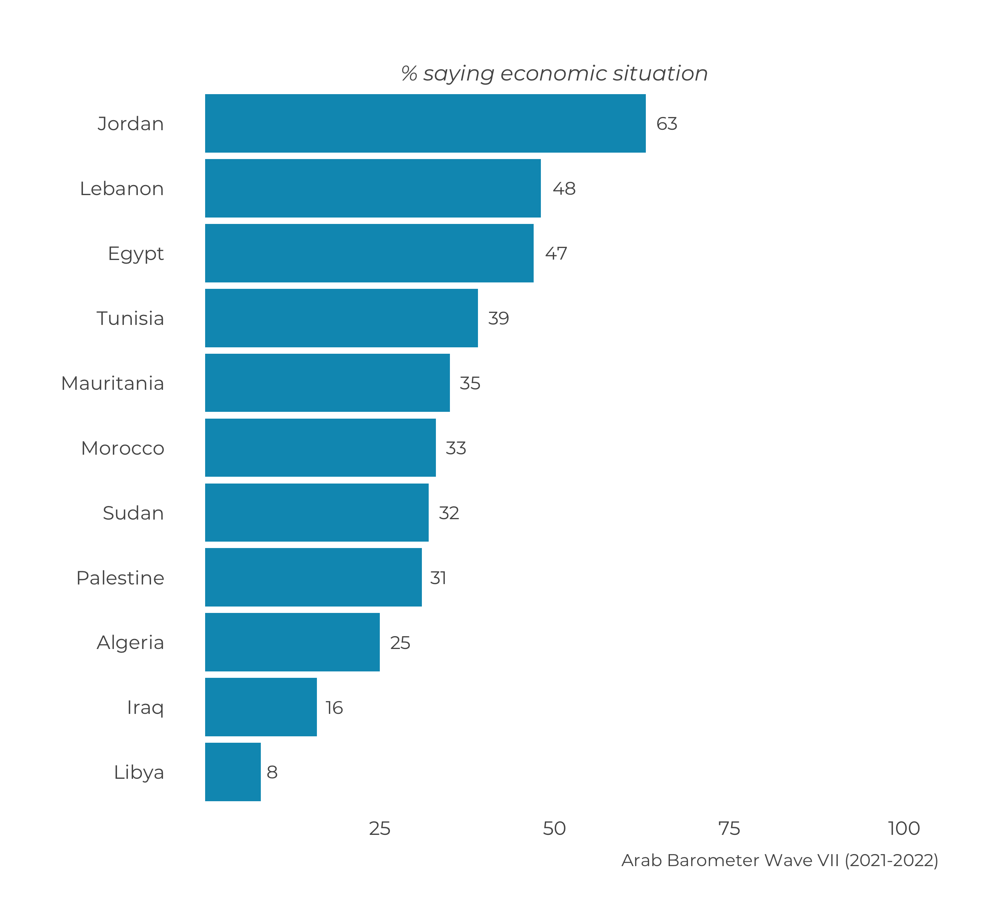

Chapter 1 Title & Subtitle Issues
Title and subtitle issues often go hand-in-hand, and the process for solving them is often the same, so both will be addressed here. As shorthand, the guide will use “title” in place of “title and subtitle” unless otherwise explicitly stated.
- Title is not showing up
- Title is wrong
- Title does not fit on graph
- Title does not display correctly due to language issues
- Only title or only subtitle is showing up
1.1 Title/subtitle is not showing up
There are a few reasons a graph’s title may not appear. In order from most to least likely, it could be:
- the question number for the summary is wrong;
- the question number in the titles reference sheet is wrong;
- the question number does not have a title in the titles reference sheet;
- the function does not automatically supply a title for the graph; or
- the default has been changes from
.title = TRUEto.title = FALSE.
1.1.1 Wrong Question Number, User Error
The first step is to check if you are summarizing the correct question. You may automatically think, ``Of course I’m summarizing the correct question! I’m the one who’s deciding which question to summarize! I’m going to skip this section!’’
Please don’t.
This is most often the case when trying to create a comparative plot for the first category of a nominal question. For example, say you want to the percent of the population who said the economic situation was the most pressing issue facing their country across countries. You might type the following:
# English
calculate_smry_comp(abwave7_eng,
"Q2061A") %>%
plot_smry_comp(.caption = "Arab Barometer Wave VII (2021-2022)",
.language = "en")# Arabic
calculate_smry_comp(abwave7_ara,
"Q2061A") %>%
plot_smry_comp(.caption = "Arab Barometer Wave VII (2021-2022)",
.language = "ar")## Warning in .Primitive("max")(): no non-missing arguments to max;
## returning -Inf## Warning in .Primitive("min")(): no non-missing arguments to min;
## returning Inf## Error in upgradeUnit.default(-Inf): Not a unit objectYou get a graph and the numbers are correct. What gives?
What gives is that Q2061A is a nominal question. The summary functions in the ArabBarometR package only summarize the response values of 1 for nominal questions. You see the correct values because you are comparing the first category.
How do you know the type of question you are trying to plot? One rule of thumb is that if the question is not on a scale and has multiple different choices, it’s probably nominal. Another way to tell is to use the handy type_test() function provided by the ArabBarometR package. The only input is a character string of the variable. The function outputs the type that variable is classified as.
type_test("Q2061A")## [1] "nominal"Ok, so then why don’t you see a title? You don’t see a title because this is a nominal question and a comparative graph. The titles sheet that ArabBarometR uses to call titles for comparative plots expects all nominal questions to be dummied out. That is, if variable Q999 is a nominal question with N categories, there is a comparative title for Q999_1, Q999_2, … , Q999_N. There is NOT a comparative title for Q999.
How to Fix It Now that you know why the title isn’t showing up, you probably have a good idea of how to fix it.
- Make sure your nominal variable is dummied out.
- Re-do your code with the correct variable name.
The ArabBarometR package provides two useful methods for creating dummies: dummy_all() and dummy_select(). The dummy_all() function will create a dummy variable for every level of the original variable. The dummy_select() function will create a dummy variable for a specific level of the original variable. That is, dummy_all(abwave7,Q999) and dummy_select(abwave7,Q999,.dmy_lvl = 1) will both create the variable Q999_1, but only dummy_all() will create Q999_2 through Q999_N.
Below we can see what happens when we correct our code.
# English
abwave7_eng <- dummy_all(abwave7_eng,Q2061A)
calculate_smry_comp(abwave7_eng,
"Q2061A_1") %>%
plot_smry_comp(.caption = "Arab Barometer Wave VII (2021-2022)",
.language = "en")
# Arabic
abwave7_ara <- dummy_all(abwave7_ara,Q2061A)
calculate_smry_comp(abwave7_ara,
"Q2061A_1") %>%
plot_smry_comp(.caption = "Arab Barometer Wave VII (2021-2022)",
.language = "ar")
Fixed!
1.1.2 Wrong Question Number, Titles Sheet Errors I & II
Ok, so what if you’re not trying to create a comparative plot for a nominal question and there’s still no title? Then it’s time to look at whether there is an issue with the titles sheet. It could be that (1) the question number in the reference sheet is incorrect or (2) there is no title associated with that question number.
The first step is to verify that there is no title associated with the question number you are trying to graph, regardless of why there is no title. This can be done using the title_function() and subtitle_function() from the ArabBarometR package. These functions are primarily used internally in the plot_ functions to call up titles and subtitles, but they can also be used on the front-end to verify titles.
These functions take four inputs:
.title/.subtitle: A title the user wants to use OR a logical value indicating whether a title should be returned automatically; i.e., the title/subtitle is expected to be in the titles sheet..var: The question number as a character string; e.g.,"Q999"..language: Either"English"or"Arabic"depending on the language of the graph..graph_type: Either"individual"or"comparative"depending on the type of graph you want to make.
You can use these functions to see why no title was provided in the example for section 1.1.1. Before the corrections were made, the plot_smry_comp() function was doing the following internally:
# English
title_function(TRUE, # Automatically supply the title
"Q2061A", # Look for the title for variable Q2061A
"English", # Provide the English title
"comparative") # For a comparative graph## character(0)subtitle_function(TRUE, # Automatically supply the subtitle
"Q2061A", # Look for the subtitle for variable Q2061A
"English", # Provide the English subtitle
"comparative") # For a comparative graph## character(0)# Arabic
title_function(TRUE, # Automatically supply the title
"Q2061A", # Look for the title for variable Q2061A
"Arabic", # Provide the Arabic title
"comparative") # For a comparative graph## character(0)subtitle_function(TRUE, # Automatically supply the subtitle
"Q2061A", # Look for the subtitle for variable Q2061A
"Arabic", # Provide the Arabic subtitle
"comparative") # For a comparative graph## character(0)The functions return no value because there is no Q2061A in the comparative titles sheet. Once the question number was corrected, the plot_smry_comp() was instead doing the following internally:
# English
title_function(TRUE, # Automatically supply the title
"Q2061A_1", # Look for the title for variable Q2061A
"English", # Provide the English title
"comparative") # For a comparative graph## [1] "Most important challenge facing the country"subtitle_function(TRUE, # Automatically supply the subtitle
"Q2061A_1", # Look for the subtitle for variable Q2061A
"English", # Provide the English subtitle
"comparative") # For a comparative graph## [1] "% saying economic situation"# Arabic
title_function(TRUE, # Automatically supply the title
"Q2061A_1", # Look for the title for variable Q2061A
"Arabic", # Provide the Arabic title
"comparative") # For a comparative graph## [1] "التحدي الأهم الذي يواجه البلد"subtitle_function(TRUE, # Automatically supply the subtitle
"Q2061A_1", # Look for the subtitle for variable Q2061A
"Arabic", # Provide the Arabic subtitle
"comparative") # For a comparative graph## [1] "من يقولون الوضع الاقتصادي"If you use the functions and don’t get a value, that variable (spelled as-is) does not have a title. This could be for the reason listed above: (1) the variable is incorrectly named in the reference sheet, or (2) the variable is not in the reference sheet.
How to Fix It
Short Term: For a graph you need immediately, you can supply your own title and subtitle. In every plot_ function, there is a .title and .subtitle parameter that can be used just like the .caption parameter. That is, the user supplies a string for each parameter and those strings become the title and subtitle.
Long Term: For a permanent fix, first identify if the title is missing/misspelled from the ArabBarometR package, the latest Google Drive titles sheet, or both.
In the package, there are four title data frames: titles_comparative_ar, titles_single_country_ar, titles_comparative_en, and titles_single_country_en. These data frames contain all the Arabic comparative titles, Arabic single country titles, English comparative titles, and English single country titles, respectively. You can use View(dataframe) to look at the data frames.
Currently, the location of the titles sheet on Google Drive will likely depend on the Wave.1
The package draws the titles from the sheet on Google Drive. Let the team know you are making updates to the titles sheet on the Google Drive, for which question, why, and when you are finished with the corrections. Once the corrections are done, MC will update the package.
1.1.3 No Automatic Title/Subtitle
There are a few functions which do not automatically supply a title. This is common for functions that plot multiple question, as the package cannot anticipate every combination of questions that could be plotted together. This will also happen if you create your own variable to graph. In these cases, the onus is on the user to supply a title.
For example, say you wanted to make a comparative graph showing the percent of citizens who say the current economic situation in their country is bad or very bad (Q101, response values 3 and 4). The default settings for this question would produce the opposite: the percent of citizens who say the current economic situation in their country is good or very good. The most straightforward way to create this graph is to create a new variable and plot that.
abwave7_eng$bad_economy <- ifelse(abwave7_eng$Q101 %in% 3:4, 1, 0)
calculate_smry_comp(abwave7_eng,
"bad_economy",
.type = "dichotomous") %>%
plot_smry_comp(.caption = "Arab Barometer Wave VII (2021-2022)",
.language = "en")
Essentially, inside the plot_smry_comp() function, the functions title_function() and subtitle_function() are once again returning nothing, since the variable “bad_economy” is not in the title data frames.
How to Fix It In this case, you must supply your own title. This is a feature that will remain constant. It is unreasonable to expect the package to predict exactly what kind of custom graphs you will produce. Just remember to include a title!
abwave7_eng$bad_economy <- ifelse(abwave7_eng$Q101 %in% 3:4, 1, 0)
calculate_smry_comp(abwave7_eng,
"bad_economy",
.type = "dichotomous") %>%
plot_smry_comp(.title = "How is the economy doing in your country?",
.subtitle = "% saying bad or very bad",
.caption = "Arab Barometer Wave VII (2021-2022)",
.language = "en")
1.1.4 Default Change
Finally, it could be that the default setting for supplying a title has changed. By default, every plot_ function for which a title can be automatically supplied2, does automatically supply a title.
Although it is extremely unlikely, it could be that the ArabBarometR default changed so plot_ functions no longer supply a title. If this is the case, a warning has certainly gone out that this change is coming/has come and a note has been made in the record of ArabBarometR versioning. To check the default setting of a function, view that function’s help page. You can do this by typing ?function_name() in your R console. On the help page, look for what the .title parameter is set to. If you see .title = F or .title = FALSE, the default has changed so the function no longer automatically supplies the title.
?plot_smry_compIt could also be that perhaps you turned off the default to check something else when debugging and forgot to switch it back. In this case, you would have explicitly set the .title parameter to FALSE.
# English
calculate_smry_comp(abwave7_eng,
"Q2061A_1") %>%
plot_smry_comp(.title = FALSE,
.subtitle = F,
.caption = "Arab Barometer Wave VII (2021-2022)",
.language = "en")
How to Fix It Set the .title and/or .subtitle parameter to TRUE or T.
# English
calculate_smry_comp(abwave7_eng,
"Q2061A_1") %>%
plot_smry_comp(.title = FALSE,
.subtitle = T,
.caption = "Arab Barometer Wave VII (2021-2022)",
.language = "en")